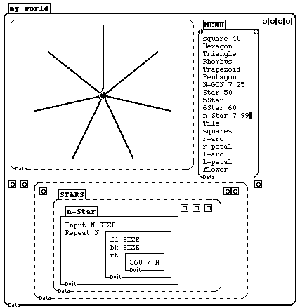
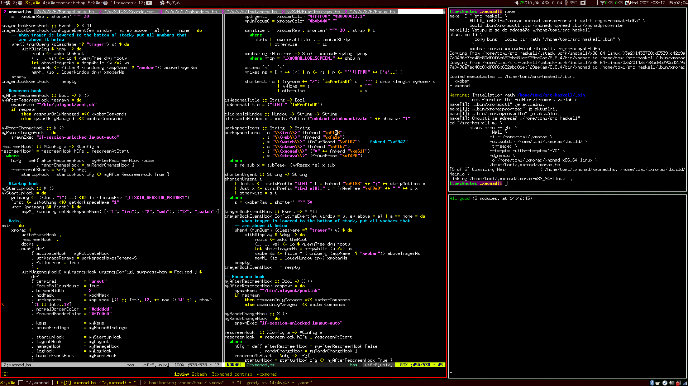
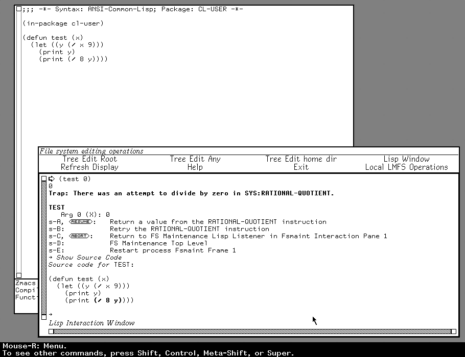
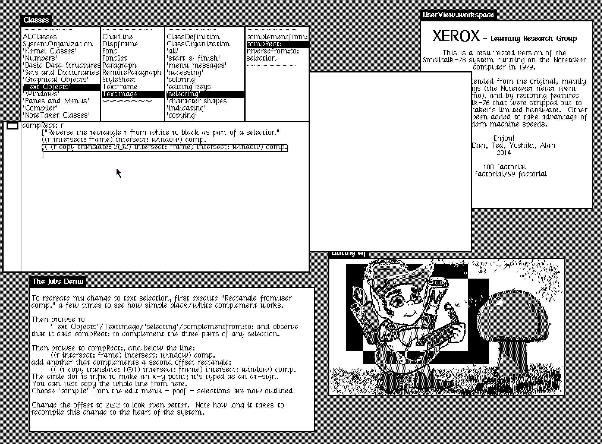
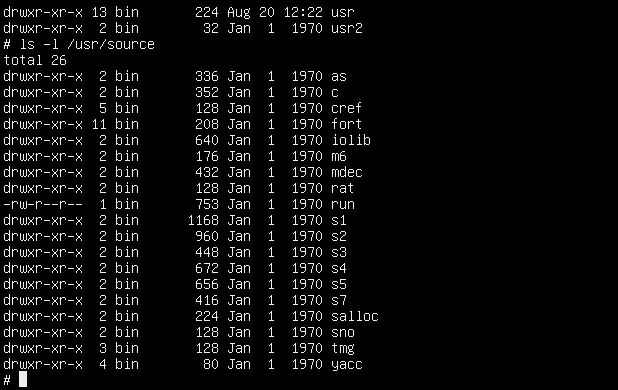
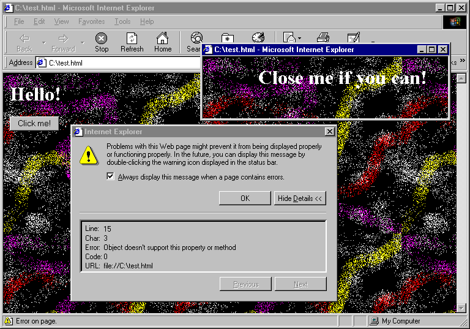

Catalogue of technical dimensions
The technical dimensions framework breaks down discussion about programming systems along various specific "axes". The dimensions identify a range of possible design choices, characterized by two extreme points in the design space.
The dimensions are not quantitative, but they allow qualitative comparison. The extreme points do not represent "good" and "bad" designs, merely different trade-offs.
The set of dimensions provides a map of the design space of programming systems (see the illustration). Past and present systems serve as landmarks, but the map also reveals unexplored or overlooked possibilities.
The 22 technical dimensions are grouped into 7 clusters or topics of interest. Each cluster consists of individual dimensions, examples that capture a particular known value (or a combination of values), remarks and relations to other dimensions.
Illustration of technical dimensions. The diagram shows a number of sample programming systems, positioned according to two hypothetical dimensions. Viewed as programming systems, text-based programming languages with debugger, editor and build tools are grouped in one region.
Technical dimensions of programming systems
Programming is done in a stateful environment, by interacting with a system through a graphical user interface. The stateful, interactive and graphical environment is more important than the programming language(s) used through it. Yet, most research focuses on comparing and studying programming languages and only little has been said about programming systems.
Technical dimensions is a framework that captures the characteristics of programming systems. It makes it possible to compare programming systems, better understand them, and to find interesting new points in the design space of programming systems. We created technical dimensions to help designers of programming systems to evaluate, compare and guide their work and, ultimately, stand on the shoulders of giants.
Where to start to learn more
-
Want to delve into the details and analyse your system?
Start from the catalogue of technical dimensions -
Want to explore our framework by example?
Start from good old programming systems -
Want to see how this helps us understand programming systems?
Start from a summary matrix of system and dimensions -
Want to understand our motivation and methodology?
Start from our paper about technical dimensions
Smalltalk 76 programming environment. An example of a stateful programming environment with rich graphical user interface. In Smalltalk, the developer environment is a part of an executing program and the state of the program can be edited through object browser.
-
Want to delve into the details and analyse your system?
Start from the catalogue of technical dimensions -
Want to explore our framework by example?
Start from good old programming systems -
Want to see how this helps us understand programming systems?
Start from a summary matrix of system and dimensions -
Want to understand our motivation and methodology?
Start from our paper about technical dimensions -
Want to the Technical Dimensions welcome page?
Go back and choose a different route
Matrix of systems and dimensions
The matrix shows the differences between good old programming systems along the dimensions identified by our framework. For conciseness, the table shows only one row for each cluster of dimensions, which consists of multiple separate dimensions each.
The header colors are used to mark systems that are similar (in an informal sense) for a given dimension. Icons indicate a speficic characteristics and should help you find connections between systems. You can click on the header to go to a relevant paper section, but note that not all cases are discussed in the paper.
| LISP machines | Smalltalk | UNIX | Spreadsheets | Web platform | Hypercard | Boxer | Notebooks | Haskell | |
|---|---|---|---|---|---|---|---|---|---|
| Interaction | |||||||||
| Notation | |||||||||
| Conceptual structure | |||||||||
| Customizability | |||||||||
| Complexity | |||||||||
| Errors | |||||||||
| Adoptability |
Select systems and dimensions to compare in the table
Programming systems
read more in the paperpaper....
Abstract
Programming requires much more than just writing code in a programming language. It is usually done in the context of a stateful environment, by interacting with a system through a graphical user interface. Yet, this wide space of possibilities lacks a common structure for navigation. Work on programming systems fails to form a coherent body of research, making it hard to improve on past work and advance the state of the art.
In computer science, much has been said and done to allow comparison of programming languages, yet no similar theory exists for programming systems; we believe that programming systems deserve a theory too.
We present a framework of technical dimensions which capture the underlying characteristics of programming systems and provide a means for conceptualizing and comparing them.
We identify technical dimensions by examining past influential programming systems and reviewing their design principles, technical capabilities, and styles of user interaction. Technical dimensions capture characteristics that may be studied, compared and advanced independently. This makes it possible to talk about programming systems in a way that can be shared and constructively debated rather than relying solely on personal impressions.
Our framework is derived using a qualitative analysis of past programming systems. We outline two concrete ways of using our framework. First, we show how it can analyze a recently developed novel programming system. Then, we use it to identify an interesting unexplored point in the design space of programming systems.
Much research effort focuses on building programming systems that are easier to use, accessible to non-experts, moldable and/or powerful, but such efforts are disconnected. They are informal, guided by the personal vision of their authors and thus are only evaluable and comparable on the basis of individual experience using them. By providing foundations for more systematic research, we can help programming systems researchers to stand, at last, on the shoulders of giants.
A systematic presentation removes ideas from the ground that made them grow and arranges them in an artificial pattern. The Tyranny of Science, Paul Feyerabend
Irony is said to allow the artist to continue his creative production while immersed in a sociocultural context of which he is critical. Irony; or, the Self-Critical Opacity of Postmodernist Architecture, Emmanuel Petit
Introduction
Many forms of software have been developed to enable programming. The classic form consists of a programming language, a text editor to enter source code, and a compiler to turn it into an executable program. Instances of this form are differentiated by the syntax and semantics of the language, along with the implementation techniques in the compiler or runtime environment. Since the advent of graphical user interfaces (GUIs), programming languages can be found embedded within graphical environments that increasingly define how programmers work with the language---for instance, by directly supporting debugging or refactoring. Beyond this, the rise of GUIs also permits diverse visual forms of programming, including visual languages and GUI-based end-user programming tools.
This paper advocates a shift of attention from programming languages to the more general notion of "software that enables programming"---in other words, programming systems.
\begin{defn}[Programming System] A \emph{programming system} is an integrated and complete set of tools sufficient for creating, modifying, and executing programs. These will include notations for structuring programs and data, facilities for running and debugging programs, and interfaces for performing all of these tasks. Facilities for testing, analysis, packaging, or version control may also be present. Notations include programming languages and interfaces include text editors, but are not limited to these. \end{defn}
This notion covers classic programming languages together with their editors, debuggers, compilers, and other tools. Yet it is intentionally broad enough to accommodate image-based programming environments like Smalltalk, operating systems like UNIX, and hypermedia authoring systems like Hypercard, in addition to various other examples we will mention.
The problem: no systematic framework for systems
There is a growing interest in broader forms of programming systems, both in the programming research community and in industry. Researchers are studying topics such as programming experience and live programming that require considering not just the language, but further aspects of a given system. At the same time, commercial companies are building new programming environments like Replit\ \cite{ReplitWeb} or low-code tools like Dark\ \cite{DarkWeb} and Glide\ \cite{GlideWeb}. Yet, such topics remain at the sidelines of mainstream programming research. While programming languages are a well-established concept, analysed and compared in a common vocabulary, no similar foundation exists for the wider range of programming systems.
The academic research on programming suffers from this lack of common vocabulary. While we may thoroughly assess programming languages, as soon as we add interaction or graphics into the picture, evaluation beyond subjective "coolness" becomes fraught with difficulty.^[The same difficulty in the context of user interface systems has been analyzed by Olsen\ \cite{EvUISR}. Interesting future work would be a detailed analysis of publications on programming systems to understand this issue in depth. One notable characteristic is that publications tend to present (parts of) new systems. This is the case for 5/6 and 6/7 papers in the LIVE 2020 and 2021 workshops respectively\ \cite{LIVE20, LIVE21}. In contrast, publications in the field of programming languages often address specific issues of interest to a greater number of languages.] Moreover, when designing new systems, inspiration is often drawn from the same few standalone sources of ideas. These might be influential past systems like Smalltalk, programmable end-user applications like spreadsheets, or motivational illustrations like those of Bret Victor\ \cite{BretVictor}.
Instead of forming a solid body of work, the ideas that emerge are difficult to relate to each other. The research methods used to study programming systems lack the rigorous structure of programming language research methods. They tend to rely on singleton examples, which demonstrate their author's ideas, but are inadequate methods for comparing new ideas with the work of others. This makes it hard to build on top and thereby advance the state of the art.
Studying programming systems is not merely about taking a programming language and looking at the tools that surround it. It presents a paradigm shift to a perspective that is, at least partly, incommensurable with that of languages. When studying programming languages, everything that matters is in the program code; when studying programming systems, everything that matters is in the interaction between the programmer and the system. As documented by Gabriel\ \cite{PLrev}, looking at a system from a language perspective makes it impossible to think about concepts that arise from interaction with a system, but are not reflected in the language. Thus, we must proceed with some caution. As we will see, when we talk about Lisp as a programming system, we mean something very different from a parenthesis-heavy programming language!
Contributions
We propose a common language as an initial step towards a more progressive research on programming systems. Our set of technical dimensions seeks to break down the holistic view of systems along various specific "axes". The dimensions identify a range of possible design choices, characterized by two extreme points in the design space. They are not quantitative, but they allow comparison by locating systems on a common axis. We do not intend for the extreme points to represent "good" or "bad" designs; we expect any position to be a result of design trade-offs. At this early stage in the life of such a framework, we encourage agreement on descriptions of systems first in order to settle any normative judgements later.
The set of dimensions can be understood as a map of the design space of programming systems (Figure\ \ref{fig:tech-dims-diagram}). Past and present systems will serve as landmarks, and with enough of them, we may reveal unexplored or overlooked possibilities. So far, the field has not been able to establish a virtuous cycle of feedback; it is hard for practitioners to situate their work in the context of others' so that subsequent work can improve on it. Our aim is to provide foundations for the study of programming systems that would allow such development.
This paper is intended as a reference on the current state of the technical dimensions framework and it is meant to be used rather than read. We present the dimensions in detail, but encourage the reader to skim through the details on the first read. Subsequently, we suggest revisiting dimensions which seem relevant to a concrete system known to the reader. The main contributions of this paper are organized as follows:
- In Section\ \ref{programming-systems}, we characterize what a programming system is and review landmark programming systems of the past that are used as examples throughout this paper, as well as to delineate our notion of a programming system.
- We present the technical dimensions in detail, organised into related clusters: interaction, notation, conceptual structure, customizability, complexity, errors, and adoptability. For each dimension, we give examples that illustrate the range of values along its axis. We intend this as a reference to be used as needed rather than something to be read from start to finish, so we recommend skimming the catalogue on the first reading.
- In Section\ \ref{evaluation}, we sketch two ways of using the technical dimensions framework. In Section\ \ref{evaluating-the-dark-programming-system}, we use it to evaluate a recent interesting programming system; in Section\ \ref{exploring-the-design-space}, we use it to identify an unexplored point in the design space and envision a potential novel programming system.
\begin{figure} \centering \includegraphics[width=0.6\linewidth]{plot-figure0.pdf} \caption{One 2-dimensional slice of the space of possible systems, to be examined in more detail in Section\ \ref{exploring-the-design-space}.\label{fig:tech-dims-diagram}} \end{figure}
A programming system is an integrated and complete set of tools sufficient for creating, modifying, and executing programs. These will include notations for structuring programs and data, facilities for running and debugging programs, and interfaces for performing all of these tasks. Facilities for testing, analysis, packaging, or version control may also be present. Notations include programming languages and interfaces include text editors, but are not limited to these.
We introduce the notion of a programming system through a number of example systems. We draw them from three broad reference classes:
Software ecosystems built around a text-based programming language. They consist of a set of tools such as compilers, debuggers, and profilers. These tools may exist as separate command-line programs, or within an Integrated Development Environment.
Those that resemble an operating system (OS) in that they structure the execution environment and encompass the resources of an entire machine (physical or virtual). They provide a common interface for communication, both between the user and the computer, and between programs themselves.
Programmable applications, typically optimized for a specific domain, offering a limited degree of programmability which may be increased with newer versions.
We will proceed to detail some systems under this grouping. This will provide an intuition for the notion of a programming system and establish a collection of go-to examples for the rest of the paper.
Systems based around languages
Text-based programming languages sit within programming systems whose boundaries are not explicitly defined. To speak of a programming system, we need to consider a language with, at minimum, an editor and a compiler or interpreter. However, the exact boundaries are a design choice that significantly affects our analysis.
\paragraph{Java with the Eclipse ecosystem.} Java\ \cite{Java} cannot be viewed as a programming system on its own, but it is one if we consider it as embedded in an ecosystem of tools. There are multiple ways to delineate this, resulting in different analyses. A minimalistic programming system would consist of a text editor to write Java code and a command line compiler. A more realistic system is Java as embedded in the Eclipse IDE\ \cite{Eclipse}. The programming systems view allows us to see all there is beyond the textual code. In the case of Eclipse, this includes the debugger, refactoring tools, testing and modelling tools, GUI designers, and so on. This delineation yields a programming system that is powerful and convenient, but has a large number of concepts and secondary notations.
\paragraph{Haskell tools ecosystem.} Haskell is an even more language-focused programming system. It is used through the command-line GHC compiler\ \cite{GHC} and GHCi REPL, alongside a text editor that provides features like syntax highlighting and auto-completion. Any editor that supports the Language Server Protocol\ \cite{LSP} will suffice to complete the programming system.
Haskell is mathematically rooted and relies on mathematical intuition for understanding many of its concepts. This background is also reflected in the notations it uses. In addition to the concrete language syntax for writing code, the ecosystem also uses an informal mathematical notation for writing about Haskell (e.g. in academic papers or on the whiteboard). This provides an additional tool for manipulating Haskell programs. Experiments on paper can provide a kind of rapid feedback that other systems may provide through live programming.
\paragraph{From REPLs to notebooks.} A different kind of developer ecosystem that evolved around a programming language is the Jupyter notebook platform\ \cite{Jupyter}. In Jupyter, data scientists write scripts divided into notebook cells, execute them interactively and see the resulting data and visualizations directly in the notebook itself. This brings together the REPL, which dates back to conversational implementations of Lisp in the 1960s, with literate programming\ \cite{LiterateProg} used in the late 1980s in Mathematica 1.0\ \cite{Mathematica}.
As a programming system, Jupyter has a number of interesting characteristics. The primary outcome of programming is the notebook itself, rather than a separate application to be compiled and run. The code lives in a document format, interleaved with other notations. Code is written in small parts that are executed quickly, offering the user more rapid feedback than in conventional programming. A notebook can be seen as a trace of how the result has been obtained, yet one often problematic feature of notebooks is that some allow the user to run code blocks out-of-order. The code manipulates mutable state that exists in a "kernel" running in the background. Thus, retracing one's steps in a notebook is more subtle than in, say, Common Lisp\ \cite{CommonLisp}, where the dribble function would directly record the user's session to a file.
OS-like programming systems
"OS-likes" begin from the 1960s when it became possible to interact one-on-one with a computer. First, time-sharing systems enabled interactive shared use of a computer via a teletype; smaller computers such as the PDP-1 and PDP-8 provided similar direct interaction, while 1970s workstations such as the Alto and Lisp Machines added graphical displays and mouse input. These OS-like systems stand out as having the totalising scope of operating systems, whether or not they are ordinarily seen as taking this role.
\paragraph{MacLisp and Interlisp.} LISP 1.5\ \cite{LISP15} arrived before the rise of interactive computers, but the existence of an interpreter and the absence of declarations made it natural to use Lisp interactively, with the first such implementations appearing in the early 1960s. Two branches of the Lisp family\ \cite{LispEvolve}, MacLisp and the later Interlisp, embraced the interactive "conversational" way of working, first through a teletype and later using the screen and keyboard.
Both MacLisp and Interlisp adopted the idea of persistent address space. Both program code and program state were preserved when powering off the system, and could be accessed and modified interactively as well as programmatically using the same means. Lisp Machines embraced the idea that the machine runs continually and saves the state to disk when needed. Today, this is widely seen in cloud-based services like Google Docs and online IDEs. Another idea pioneered in MacLisp and Interlisp was the use of structure editors. These let programmers work with Lisp data structures not as sequences of characters, but as nested lists. In Interlisp, the programmer would use commands such as *P to print the current expression, or *(2 (X Y)) to replace its second element with the argument (X Y). The PILOT system\ \cite{Pilot} offered even more sophisticated conversational features. For typographical errors and other slips, it would offer an automatic fix for the user to interactively accept, modifying the program in memory and resuming execution.
\paragraph{Smalltalk.} Smalltalk appeared in the 1970s with a distinct ambition of providing "dynamic media which can be used by human beings of all ages"\ \cite{PersonalDynMedia}. The authors saw computers as meta-media that could become a range of other media for education, discourse, creative arts, simulation and other applications not yet invented. Smalltalk was designed for single-user workstations with a graphical display, and pioneered this display not just for applications but also for programming itself. In Smalltalk 72, one wrote code in the bottom half of the screen using a structure editor controlled by a mouse, and menus to edit definitions. In Smalltalk-76 and later, this had switched to text editing embedded in a class browser for navigating through classes and their methods.
Similarly to Lisp systems, Smalltalk adopts the persistent address space model of programming where all objects remain in memory, but based on objects and message passing rather than lists. Any changes made to the system state by programming or execution are preserved when the computer is turned off. Lastly, the fact that much of the Smalltalk environment is implemented in itself makes it possible to extensively modify the system from within.
We include Lisp and Smalltalk in the OS-likes because they function as operating systems in many ways. On specialized machines, like the Xerox Alto and Lisp machines, the user started their machine directly in the Lisp or Smalltalk environment and was able to do everything they needed from within the system. Nowadays, however, this experience is associated with UNIX and its descendants on a vast range of commodity machines.
\paragraph{UNIX.} UNIX illustrates the fact that many aspects of programming systems are shaped by their intended target audience. Built for computer hackers\ \cite{Hackers}, its abstractions and interface are close to the machine. Although historically linked to the C language, UNIX developed a language-agnostic set of abstractions that make it possible to use multiple programming languages in a single system. While everything is an object in Smalltalk, the ontology of the UNIX system consists of files, memory, executable programs, and running processes. Note the explicit "stage" distinction here: UNIX distinguishes between volatile memory structures, which are lost when the system is shut down, and non-volatile disk structures that are preserved. This distinction between types of memory is considered, by Lisp and Smalltalk, to be an implementation detail to be abstracted over by their persistent address space. Still, this did not prevent the UNIX ontology from supporting a pluralistic ecosystem of different languages and tools.
\paragraph{Early and modern Web.} The Web evolved\ \cite{DotCom} from a system for sharing and organizing information to a programming system. Today, it consists of a wide range of server-side programming tools, JavaScript and languages that compile to it, and notations like HTML and CSS. As a programming system, the "modern 2020s web" is reasonably distinct from the "early 1990s web". In the early web, JavaScript code was distributed in a form that made it easy to copy and re-use existing scripts, which led to enthusiastic adoption by non-experts---recalling the birth of microcomputers like Commodore 64 with BASIC a decade earlier.
In the "modern web", multiple programming languages treat JavaScript as a compilation target, and JavaScript is also used as a language on the server-side. This web is no longer simple enough to encourage copy-and-paste remixing of code from different sites. However, it does come with advanced developer tools that provide functionality resembling early interactive programming systems like Lisp and Smalltalk. The Document Object Model (DOM) structure created by a web page is transparent, accessible to the user and modifiable through the built-in browser inspector tools. Third-party code to modify the DOM can be injected via extensions. The DOM almost resembles the tree/graph model of Smalltalk and Lisp images, lacking the key persistence property. This limitation, however, is being addressed by Webstrates\ \cite{Webstrates}.
Application-focused systems
The previously discussed programming systems were either universal, not focusing on any particular kind of application, or targeted at broad fields, such as Artificial Intelligence and symbolic data manipulation in Lisp's case. In contrast, the following examples focus on more narrow kinds of applications that need to be built. Many support programming based on rich interactions with specialized visual and textual notations.
\paragraph{Spreadsheets.} The first spreadsheets became available in 1979 in VisiCalc\ \cite{VisiCalc, VisiCalc2} and helped analysts perform budget calculations. As programming systems, spreadsheets are notable for their programming substrate (a two-dimensional grid) and evaluation model (automatic re-evaluation). The programmability of spreadsheets developed over time, acquiring features that made them into powerful programming systems in a way VisiCalc was not. The final step was the 1993 inclusion of macros in Excel, later further extended with Visual Basic for Applications.
\paragraph{Graphical "languages".} Efforts to support programming without relying on textual code can only be called "languages" in a metaphorical sense. In these programming systems, programs are made out of graphical structures as in LabView\ \cite{LabView} or Programming-By-Example\ \cite{PBE}.
\paragraph{HyperCard.} While spreadsheets were designed to solve problems in a specific application area, HyperCard\ \cite{HyperCard} was designed around a particular application format. Programs are "stacks of cards" containing multimedia components and controls such as buttons. These controls can be programmed with pre-defined operations like "navigate to another card", or via the HyperTalk scripting language for anything more sophisticated.
As a programming system, HyperCard is interesting for a couple of reasons. It effectively combines visual and textual notation. Programs appear the same way during editing as they do during execution. Most notably, HyperCard supports gradual progression from the "user" role to "developer": a user may first use stacks, then go on to edit the visual aspects or choose pre-defined logic until, eventually, they learn to program in HyperTalk.
Interaction Description and relations...
How do users manifest their ideas, evaluate the result, and generate new ideas in response?
Dimensions
-
What are the gulfs of execution and evaluation and how are they related?
! -
Which sets of feedback loops only occur together?
! -
How do we go from abstractions to concrete examples and vice versa?
!
Examples
Interaction
An essential aspect of programming systems is how the user interacts with them when creating programs. Take the standard form of statically typed, compiled languages with straightforward library linking: here, programmers write their code in a text editor, invoke the compiler, and read through error messages they get. After fixing the code to pass compilation, a similar process might happen with runtime errors.
Other forms are yet possible. On the one hand, some typical interactions like compilation or execution of a program may not be perceptible at all. On the other hand, the system may provide various interfaces to support the plethora of other interactions that are often important in programming, such as looking up documentation, managing dependencies, refactoring or pair programming.
We focus on the interactions where programmer interacts with the system to construct a program with a desired behavior. To analyze those, we use the concepts of gulf of execution and gulf of evaluation from The Design of Everyday Things\ \cite{Norman}.
Relations
- Errors (Section \ref{errors}) A longer evaluation gulf delays the detection of errors. A longer execution gulf can increase the likelihood of errors (e.g. writing a lot of code or taking a long time to write it). By turning runtime bugs into statically detected bugs, the combined evaluation gulfs can be reduced.
- Adoptability (Section \ref{adoptability}): The execution gulf is concerned with software using and programming in general. The time taken to realize an idea in software is affected by the user's familiarity and the system's learnability.
- Notation (Section \ref{notation}): Feedback loops are related to notational structures. In a system with multiple notations, each notation may have different associated feedback loops. The motto "The thing on the screen is supposed to be the actual thing" \cite{NakedObjects}, adopted in the context of live programming, relates liveness to a direct connection between surface and internal notations. The idea is that interactable objects should be equipped with faithful behavior, instead of being intangible shadows cast by the hidden real object.
Dimension: feedback loops
In using a system, one first has some idea and attempts to make it exist in the software; the gap between the user's goal and the means to execute the goal is known as the gulf of execution. Then, one compares the result actually achieved to the original goal in mind; this crosses the gulf of evaluation. These two activities comprise the feedback loop through which a user gradually realises their desires in the imagination, or refines those desires to find out "what they actually want".
A system must contain at least one such feedback loop, but may contain several at different levels or specialized to certain domains. For each of them, we can separate the gulf of execution and evaluation as independent legs of the journey, with possibly different manners and speeds of crossing them.
\begin{figure} \centering \includegraphics[width=0.5\linewidth]{feedback-loops.png} \caption{The nested feedback loops of a statically-checked programming language.\label{fig:feedback-loops}} \end{figure}
For example, we can analyze statically checked programming languages (e.g. Java, Haskell) into several feedback loops (Figure \ref{fig:feedback-loops}):
Programmers often think about design details and calculations on a whiteboard or notebook, even before writing code. This supplementary medium has its own feedback loop, even though this is often not automatic.
-
The code is written and is then put through the static checker. An error sends the user back to writing code. In the case of success, they are "allowed" to run the program, leading into cycle 3.
- The execution gulf comprises multiple cycles of the supplementary medium, plus whatever overhead is needed to invoke the compiler (such as build systems).
- The evaluation gulf is essentially the waiting period before static errors or a successful termination are observed. Hence this is bounded by some function of the length of the code (the same cannot be said for the following cycle 3.)
-
With a runnable program, the user now evaluates the runtime behavior. Runtime errors can send the user back to writing code to be checked, or to tweak dynamically loaded data files in a similar cycle.
- The execution gulf here may include multiple iterations of cycle 2, each with its own nested cycle 1.
The evaluation gulf here is theoretically unbounded; one may have to wait a very long time, or create very specific conditions, to rule out certain bugs (like race conditions) or simply to consider the program as fit for purpose.
By imposing static checks, some bugs can be pushed earlier to the evaluation stage of cycle 2, reducing the likely size of the cycle 3 evaluation gulf.
On the other hand, this can make it harder to write statically valid code, which may increase the number of level-2 cycles, thus increasing the total execution gulf at level 3.
- Depending on how these balance out, the total top-level feedback loop may grow longer or shorter.
Example: immediate feedback
The specific case where the evaluation gulf is minimized to be imperceptible is known as immediate feedback. Once the user has caused some change to the system, its effects (including errors) are immediately visible. This is a key ingredient of liveness, though it is not sufficient on its own. (See Relations)
The ease of achieving immediate feedback is obviously constrained by the computational load of the user's effects on the system, and the system's performance on such tasks. However, such "loading time" is not the only way feedback can be delayed: a common situation is where the user has to manually ask for (or "poll") the relevant state of the system after their actions, even if the system finished the task quickly. Here, the feedback could be described as immediate upon demand yet not automatically demanded. For convenience, we choose to include the latter criterion---automatic demand of result---in our definition of immediate feedback.
In a REPL or shell, there is a main cycle of typing commands and seeing their output, and a secondary cycle of typing and checking the command line itself. The output of commands can be immediate, but usually reflects only part of the total effects or even none at all. The user must manually issue further commands afterwards, to check the relevant state bit by bit. The secondary cycle, like all typing, provides immediate feedback in the form of character "echo", but things like syntax errors generally only get reported after the entire line is submitted. This evaluation gulf has been reduced in the JavaScript console of web browsers, where the line is "run" in a limited manner on every keystroke. Simple commands without side-effects,^[Of course, these are detected via some conservative over-approximation which excludes expressions that might side-effect.] such as calls to pure functions, can give instantly previewed results---though partially typed expressions and syntax errors will not trigger previews.
Example: direct manipulation
Direct manipulation \cite{DirectManip} is a special case of an immediate feedback loop. The user sees and interacts with an artefact in a way that is as similar as possible to real life; this typically includes dragging with a cursor or finger in order to physically move a visual item, and is limited by the particular haptic technology in use.
Naturally, because moving real things with one's hands does not involve any waiting for the object to "catch up",^[In some situations, such as steering a boat with a rudder, there is a delay between input and effect. But on closer inspection, this delay is between the rudder and the boat; we do not see the hand pass through the wheel like a hologram, followed by the wheel turning a second later. In real life, objects touched directly give immediate feedback; objects controlled further down the line might not!] direct manipulation is necessarily an immediate-feedback cycle. If, on the other hand, one were to move a figure on screen by typing new co-ordinates in a text box, then this could still give immediate feedback (if the update appears instant and automatic) but would not be an example of direct manipulation.
Spreadsheets contain a feedback loop for direct manipulation of values and formatting, as in any other WYSIWYG application. Here, there is feedback for every character typed and every change of style. This is not the case in the other loop for formula editing and formula invocation. There, we see a larger execution gulf for designing and typing formulas, where feedback is only given upon committing the formula by pressing enter. This makes it an "immediate feedback" loop only on-demand, as defined above.
Dimension: modes of interaction
The possible interactions in a programming system are typically structured so that interactions, and the associated feedback loops, are only available in certain modes. For example, when creating a new project, the user may be able to configure the project through a conversational interface like npm init in modern JavaScript. Such interactions are no longer available once the project is created. This idea of interaction modes goes beyond just programming systems, appearing in software engineering methodologies. In particular, having a separate implementation and maintenance phase would be an example of two modes.
Editing vs debugging. A good example is the distinction between editing and debugging mode. When debugging a program, the user can modify the program state and get (more) immediate feedback on what individual operations do. In some systems, one can even modify the program itself during debugging. Such feedback loops are not available outside of debugging mode.
Lisp systems sometimes distinguish between interpreted and compiled mode. The two modes do not differ just in the efficiency of code execution, but also in the interactions they enable. In the interpreted mode, code can be tested interactively and errors may be corrected during the code execution (see Error response). In the compiled mode, the program can only be tested as a whole. The same two modes also exist, for example, in some Haskell systems where the REPL uses an interpreter (GHCi) distinct from the compiler (GHC).
Jupyter notebooks. A programming system may also unify modes that are typically distinct. The Jupyter notebook environment does not have a distinct debugging mode; the user runs blocks of code and receives the result. The single mode can be used to quickly try things out, and to generate the final result, partly playing the role of both debugging and editing modes. However, even Jupyter notebooks distinguish between editing a document and running code.
Dimension: abstraction construction
A necessary activity in programming is going between abstract schemas and concrete instances. Abstractions can be constructed from concrete examples, first principles or through other methods. A part of the process may happen in the programmer's mind: they think of concrete cases and come up with an abstract concept, which they then directly encode in the system. Alternatively, a system can support these different methods directly.
One option is to construct abstractions from first principles. Here, the programmer starts by defining an abstract entity such as an interface in object-oriented programming languages. To do this, they have to think what the required abstraction will be (in the mind) and then encode it (in the system).
Another option is to construct abstractions from concrete cases. Here, the programmer uses the system to solve one or more concrete problems and, when they are satisfied, the system guides them in creating an abstraction based on their concrete case(s). In a programming language IDE this manifests as the "extract function" refactor, whereas in other systems we see approaches like macro recording.
Pygmalion. In Pygmalion \cite{Pygmalion}, all programming is done by manipulating concrete icons that represent concrete things. To create an abstraction, you can use "Remember mode", which records the operations done on icons and makes it possible to bind this recording to a new icon.
Jupyter notebook. In Jupyter notebooks, you are inclined to work with concrete things, because you see previews after individual cells. This discourages creating abstractions, because then you would not be able to look inside at such a fine grained level.
Spreadsheets. Up until the recent introduction of lambda expressions into Excel, spreadsheets have been relentlessly concrete, without any way to abstract and reuse patterns of computation other than copy-and-paste.
Notation Description and relations...
How are the different textual and visual programming notations related?
Dimensions
-
What notations are used to program the system and how are they related?
! -
What is the connection between what a user sees and what a computer program sees?
! -
Is one notation more important than others?
! -
Do similar expressions encode similar programs?
! -
Does the notation use a small or a large number of basic concepts?
!
Examples
Notation
\mybox{How are the different textual / visual programming notations related?}
Programming is always done through some form of notation. We consider notations in the most general sense and include any structured gesture using textual or visual notation. Textual notations primarily include programming languages, but also things like configuration files. Visual notations include graphical programming languages. Other kinds of structured gestures include user interfaces for constructing visual elements used in the system.
References
Cognitive Dimensions of Notation \cite{CogDims} provide a comprehensive framework for analysing individual notations, while our focus here is on how multiple notations are related and how they are structured. It is worth noting that the Cognitive Dimensions also define secondary notation, but in a different sense to ours. For them, secondary notation refers to whether a notation allows including redundant information such as color or comments for readability purposes.
The importance of notations in the practice of science, more generally, has been studied by \cite{PaperTools} as "paper tools". These are formula-like entities which can be manipulated by humans in lieu of experimentation, such as the aforementioned mathematical notation in Haskell: a "paper tool" for experimentation on a whiteboard. Programming notations are similar, but they are a way of communicating with a machine; the experimentation does not happen on paper alone.
Relations
- Interaction (Section \ref{interaction}): The feedback loops that exist in a programming system are typically associated with individual notations. Different notations may also have different feedback loops.
- Adoptability (Section \ref{adoptability}): Notational structure can affect learnability. In particular, complementing notations may require (possibly different) users to master multiple notations. Overlapping notations may improve learnability by allowing the user to edit the program in one way (perhaps visually) and see the effect in the other notation (such as code.)
- Errors (Section \ref{errors}). A process that merely records user actions in a sequence (such as text editing) will, in particular, record any errors the user makes and defer their handling to later use of the data, keeping the errors latent. A process which instead treats user actions as edits to a structure, with constraints and correctness rules, will be able to catch errors at the moment they are introduced and ensure the data coming out is error-free.
Dimension: notational structure
In practice, most programming systems use multiple notations. Different notations can play different roles in the system. On the one hand, multiple overlapping notations can be provided as different ways of programming the same aspects of the system. In this case, each notation may be more suitable to different kinds of users, but may have certain limitations (for example, a visual notation may have a limited expressive power). On the other hand, multiple complementing notations may be used as the means for programming different aspects of the system. In this case, programming the system requires using multiple notations, but each notation may be more suitable for the task at hand; think of how HTML describes document structure while JavaScript specifies its behavior.
Example: overlapping notations
A programming system may provide multiple notations for programming the same aspect of the system. This is typically motivated by an attempt to offer easy ways of completing different tasks: say, a textual notation for defining abstractions and a visual notation for specifying concrete structures. The crucial issue in this kind of arrangement is synchronizing the different notations; if they have different characteristics, this may not be a straightforward mapping. For example, source code may allow more elaborate abstraction mechanisms like loops, which will appear as visible repetition in the visual notation. What should such a system do when the user edits a single object that resulted from such repetition? Similarly, textual notation may allow incomplete expressions that do not have an equivalent in the visual notation. For programming systems that use overlapping notations, we need to describe how the notations are synchronized.
Sketch-n-Sketch \cite{SnS} employs overlapping notations for creating and editing SVG and HTML documents. The user edits documents in an interface with a split-screen structure that shows source code on the left and displayed visual output on the right. They can edit both of these and changes are propagated to the other view. The code can use abstraction mechanisms (such as functions) which are not completely visible in the visual editor (an issue we return to in expression geography below). Sketch-n-Sketch can be seen as an example of a projectional editor.^[Technically, traditional projectional editors usually work more directly with the abstract syntax tree of a programming language.\note{TODO: Insert some more references to research on "projectional editors"}]
UML Round-tripping. Another example of a programming system that utilizes the overlapping notations structure are UML design tools that display the program both as source code and as a UML diagram. Edits in one result in automatic update of the other. An example is the Together/J^[https://www.mindprod.com/jgloss/togetherj.html] system. To solve the issue of notation synchronization, such systems often need to store additional information in the textual notation, typically using a special kind of code comment. In this example, after the user re-arranges classes in UML diagrams, the new locations need to be updated in the code.
Example: complementing notations
A programming system may also provide multiple complementing notations for programming different aspects of its world. Again, this is typically motivated by the aim to make specifying certain aspects of programming easier, but it is more suitable when the different aspects can be more clearly separated. The key issue for systems with complementing notations is how the different notations are connected. The user may need to use both notations at the same time, or they may need to progress from one to the next level when solving increasingly complex problems. In the latter case, the learnability of progressing from one level to the next is a major concern.
Spreadsheets and HyperCard. In Excel, there are three different complementing notations that allow users to specify aspects of increasing complexity: (i) the visual grid, (ii) formula language and (iii) a macro language such as Visual Basic for Applications. The notations are largely independent and have different degrees of expressive power. Entering values in a grid cannot be used for specifying new computations, but it can be used to adapt or run a computation, for example when entering different alternatives in What-If Scenario Analysis. More complex tasks can be achieved using formulas and macros. A user gradually learns more advanced notations, but experience with a previous notation does not help with mastering the next one. The approach optimizes for easy learnability at one level, but introduces a hurdle for users to surmount in order to get to the second level. The notational structure of HyperCard is similar and consists of (i) visual design of cards, (ii) visual programming (via the GUI) with a limited number of operations and (iii) HyperTalk for arbitrary scripting.
Boxer and Jupyter. Boxer \cite{Boxer} uses complementing notations in that it combines a visual notation (the layout of the document and the boxes of which it consists) with textual notation (the code in the boxes). Here, the textual notation is always nested within the visual. The case of Jupyter notebooks is similar. The document structure is graphical; code and visual outputs are nested as editable cells in the document. This arrangement is common in many other systems such as Flash or Visual Basic, which both combine visual notation with textual code, although one is not nested in the other.
Dimensions: surface notation and internal notation
All programming systems build up structures in memory, which we can consider as an internal notation not usually visible to the user. Even though such structures might be revealed in a debugger, they are hidden during normal operation. What the user interacts with instead is the surface notation, typically one of text or shapes on a screen. Every interaction with the surface notation alters the internal notation in some way, and the nature of this connection is worth examining in more detail. To do this, we illustrate with a simplified binary choice for the form of these notations.
Examples: implicit vs. explicit structure
Let us partition notations into two families. Notations with implicit structure present as a sequence of items, such as textual characters or audio signal amplitudes. Those with explicit structure present as a tree or graph without an obvious order, such as shapes in a vector graphics editor. These two types of notations can be transformed into each other: the implicit structure contained in a string can be parsed into an explicit syntax tree, and an explicit document structure might be rendered into a sequence of characters with the same implicit structure.
Now consider an interface to enter a personal name made up of a forename and a surname. For the surface notation, there could be a single text field to hold the names separated with a space; here, the sub-structure is implicit in the string. Alternatively, there could be two fields where the names are entered separately, and their separation is explicit. A similar choice exists for the internal notation built up in memory: is it a single string, or two separate strings?
We can see that these choices give four combinations. More interestingly, they exhibit unique characters owing to two key asymmetries. Firstly, surface notation is mostly used by humans, while the internal notation is mostly used by the computer. Secondly, and most significantly, computer programs can only work with explicit structure, while humans can understand both explicit and implicit structure. \joel{informal vs formal structure?} Because of the practical consequences of this asymmetry, we will examine the combinations with emphasis on the internal notation first.
Examples: one string in memory (implicitly structured internal notation)
The simplest case here would be with implicit structure in the surface notation, i.e. a single text box for the full name. Edits to the surface are straightforwardly mirrored interally and persisted to disk. This corresponds to text editing. We can generalize this to an idea of sequence editing if we view the fundamental act as recording events to a list over time. For text, these are key presses; for an audio editing interface they would be samples of sound amplitude.
In the other case, with two text boxes, we have sequence rendering. The information about the separation of the two strings, present in the interface, is not quite "thrown away" but is made implicit as a space character in the string. This combination corresponds to Visual Basic generating code from GUI forms, video editors combining multiple clips and effects into a single stream, and 3D renderers turning scene graphs into pixels. Another example is line-based diff tools, which provide side-by-side views and related interfaces, yet must ultimately forward the user's changes to the underlying text file.
Critically, in both of these cases, a computer program can only manipulate the stored sequences as sequences; that is, by inserting, removing, or serially reading. The appealing feature here is that these operations are simple to implement and may be re-usable across many types of sequences. However, any further structure is implicit and, to work with it programmatically, a user must write a program to parse it into something explicit. Furthermore, errors introduced at this stage may simply be recorded into the sequence, only to be discovered much later in an attempt to use the data.
Examples: two strings in memory (explicitly structured internal notation)
\joel{TODO: cite The Many Forms of a Single Fact} With two text boxes, both notations match, so there is not much work to do. As with sequence editing, edits on the surface can be mirrored to the internal notation. This corresponds to vector graphics editors and 3D modelling tools, as well as structure editors for programming languages. For this reason we call this combination structure editing.
With a single text field, we have structure recovery. Parsing needs to happen each time the input changes. This style is found in the DOM inspector in browser developer tools, where HTML can be edited as text to make changes to the document tree structure. More generally, this is the mode found in compilers and interpreters which accept program source text yet internally work on tree and graph structures. It is also possible to do a sort of structure editing this way, where the experience is made to resemble text editing but the output is explicitly structured.
In both of these cases, in order to write programs to transform, analyze, or otherwise work with the digital artefact the user has created, one can trivially navigate the stored structure instead of parsing it for every use. Parsing is either done away with altogether or is reduced to a transient process that happens during editing; this means errors can be caught at the moment they are introduced instead of remaining latent.
Dimension: primary and secondary notations
In practice, most programming systems use multiple notations. Even in systems based on traditional programming languages, the primary notation of the language is often supported by secondary notations such as annotations encoded in comments and build tool configuration files. However, it is possible for multiple notations to be primary, especially if they are overlapping as defined earlier.
Programming languages. Programming systems built around traditional programming languages typically have further notations or structured gestures associated with them. The primary notation in UNIX is the C programming language. Yet this is enclosed in a programming system providing a multi-step mechanism for running C code via the terminal, assisted by secondary notations such as shell scripts. Some programming systems attempt to integrate tools that normally rely on secondary notations into the system itself, reducing the number of secondary notations that the programmer needs to master. For example, in the Smalltalk descendant Pharo, versioning and package management is done from within Pharo, removing the need for secondary notation such as git commands and dependency configuration files.^[The tool for versioning and package management in Pharo can still be seen as an internal domain-specific language and thus as a secondary notation, but its basic structure is shared with other notations in the Pharo system.]
Haskell. In Haskell, the primary notation is the programming language, but there are also a number of secondary notations. Those include package managers (e.g. the cabal.project file) or configuration files for Haskell build tools. More interestingly, there is also an informal mathematical notation associated with Haskell that is used when programmers discuss programs on a whiteboard or in academic publications. The idea of having such a mathematical notation dates back to the Report on Algol 58 \cite{Alg58}, which explicitly defined a "publication language" for "stating and communicating problems" using Greek letters and subscripts.
Dimension: expression geography
A crucial feature of a notation is the relationship between the structure of the notation and the structure of the behavior it encodes. Most importantly, do similar expressions in a particular notation represent similar behavior?^[See Basman's \cite{NotYetCraft} similar discussion of "density".] Visual notations may provide a more or less direct mapping. On the one hand, similar-looking code in a block language may mean very different things. On the other hand, similar looking design of two HyperCard cards will result in similar looking cards---the mapping between the notation and the logic is much more direct.
C/C++ expression language. In textual notations, this may easily not be the case. Consider the two C conditionals:
if (x==1) { ... }evaluates the Boolean expressionx==1to determine whetherxequals1, running the code block if the condition holds.if (x=1) { ... }assigns1to the variablex. In C, assignment is an expression returning the assigned value, so the result1is interpreted astrueand the block of code is always executed.
A notation can be designed to map better to the logic behind it, for example, by requiring the user to write 1==x. This solves the above problem as 1 is a literal rather than a variable, so it cannot be assigned to (1=x is a compile error).
Dimension: uniformity of notations
One common concern with notations is the extent to which they are uniform. A uniform notation can express a wide range of things using just a small number of concepts. The primary example here is S-expressions from Lisp. An S-expression is either an atom or a pair of S-expressions written (s1 . s2). By convention, an S-expression (s1 . (s2 . (s3 . nil))) represents a list, written as (s1 s2 s3). In Lisp, uniformity of notations is closely linked to uniformity of representation.^[Notations generally are closely linked to representation in that the notation may mirror the structures used for program representation. Basman et al. \cite{Externalize} refer to this as a distinction between "dead" notation and "live" representation forms).] In the idealized model of LISP 1.5, the data structures represented by an S-expression are what exists in memory. In real-world Lisp systems, the representation in memory is more complex. A programming system can also take a very different approach and fully separate the notation from the in-memory representation.
Lisp systems. In Lisp, source code is represented in memory as S-expressions, which can be manipulated by Lisp primitives. In addition, Lisp systems have robust macro processing as part of their semantics: expanding a macro revises the list structure of the code that uses the macro. Combining these makes it possible to define extensions to the system in Lisp, with syntax indistinguishable from Lisp. Moreover, it is possible to write a program that constructs another Lisp program and not only run it interpretively (using the \texttt{eval} function) but compile it at runtime (using the \texttt{compile} function) and execute it. Many domain-specific languages, as well as prototypes of new programming languages (such as Scheme), were implemented this way. Lisp the language is, in this sense, a "programmable programming language". \cite{LispIntro,ProgProgLang}
Direct manipulation for graphical elements with REPL-like code execution. Abstraction via messages sent to boxes and using ports to reuse concrete boxes.
Complementing graphical notation (boxes) with source code in LISP. Everything is a box (graphical) or a list (code). Tree-based document model.
Limited number of domain-specific concepts (box, graphical output). Composability at code level, but not at a higher level (only via ports).
Image-based system, editable during execution, but system itself cannot be modified. Adding only appends boxes and cannot modify existing ones.
Basic factoring via language and box abstractions (ports). System automates user-interface handling; high-level language and DSLs offer basic automation (garbage collection, turtle graphics).
Slips detected at runtime, no support for checking lapses and mistakes. Evaluation offers immediate feedback, making quick error correction possible.
Simple and minimal design supports learnability. Unified design makes knowledge reusable. System is closed from external world and has only limited community and available packages or examples.
yadda

Boxer
more here
Separate editing, compilation and execution modes with feedback at each level. Abstractions from first-principles (functions, type classes) are opaque during execution.
Primary source code notation with secondary infrastructure notations, edited as text. Rich mostly explicit language with variety of extensions.
Small number of unified concepts (functions, expressions) at odds with outside world. Composability at expression and type level. Limited set of convenience tools. Type classes for commonality.
Language is fixed, but can theoretically be modified as open-source project with community. Programs cannot modify themselves nor the system. Type classes allow extensibility at compile-time.
Complexity factored using math-inspired type class hierarchies with type system support. Automates memory management (GC) and evaluation order (laziness).
Strict error checking eliminates lapes and slips and some mistakes at compile time. Error correction done in text editor, based on non-trivial error messages.
Learning requires background knowledge (mathematics), but is supported by community and uniform design. Closed ecosystem, but with community and diversity of packages.
yadda

Haskell
more here
Direct manipulation for user interface; programmatic scripting with execution feedback loop. Abstractions on card level using shared backgrounds and transclusion.
Complementing graphical notation (user interface) with source code in Hypertalk. Variety of controls and langauge features with tight expression geography in user interface.
Limited number of domain-specific concepts (cards, user interface elements, scripts). Partial composability at script level, but limited at card level. Convenient for the given domain.
Cards are editable during execution, but system itself cannot be modified. Adding only appends new content, but cannot modify existing ones.
Basic factoring via language and card abstractions. Underlying system automates user-interface handling; high-level scripting language offers basic automation (garbage collection).
High-level structure prevents many errors by construction. Script slips checked at runtime. Correction done in code based on an error message.
Focus on specific domain (hypermedia) and graphical interface supports learning. End-users can progresively become programmers. Closed from external world, but active community sharing examples.
yadda

Hypercard
more here
Integrated execution and editing mode, giving feedback at runtime. Abstractions constructed using functions are accessible as data.
Very uniform notation with code and data represented as S-expressions and edited either as text or using structure editor. Use of domain-specific languages.
Small number of unified concepts ("everything is a list") at odds with outside world. Allows for composability, but lacks convenience ("Lisp curse").
System can be customized at runtime. Much of the system is written in itself and can be modified from within itself. Addressing can be done via "advising".
Optional but common factoring mechanisms include functions, CLOS and domain-specific languages. Basic automation (garbage collection) with more in the context of AI research.
Errors detected at runtime and can be corrected immediately in interactive editor/debugger. More checking can be done via reflection and code analysis.
Steep learning curve, but uniform design makes understanding reusable. Designed for programmers. Active community, but closed from the external world and limited packages available.
yadda

LISP machines
more here
Feedback and execution at cell level. Programmatic abstractions are possible, but manual approach by copying or modifying code is common.
Literate programming with code, text and outputs, embedded in a notebook as complementing notations. Document model where notebook is a list of cells.
Notebook and cells as "large" concepts with code notions (Python) as "small" concepts. Composability primarily at code level, but not notebook level. Convenient libraries and tools.
System is fixed, but can theoretically be modified as open-source project with community. Programs cannot modify themselves, notebook or system at runtime.
Complexity relegated to complex libraries (pandas, ML libraries, etc.) created outside the system. Basic language automation (GC) but no automatic recomputation in standard Jupyter setup.
Slips caught at runtime. Limited checking of lapses or domain-specific mistakes. REPL-evaluation provides quick feedback, making quick error correction possible.
Learnability is supported by focus on a specific domain, graphical interface and community. Notebooks can import a range of community packages and integrate with external systems.
yadda

Notebooks
more here
Integrated execution and editing mode, giving feedback at runtime. Abstractions constructed using objects are accessible via a browser.
Primary source code notation with graphical structure editor for object structure. Secondary overlapping notations can be developed in-system. Small language.
Small number of unified concepts ("everything is an object") at odds with outside world. Everything is composed from small number of primitives, but limits convenience. Structural commonality.
System can be customized at runtime. Much of the system is written in itself and can be modified from within itself. Extensibility achieved via object-oriented programming.
Factoring using a rich class-based system covering system and application-level features. Basic automation (garbage collection) with more possible through libraries & via reflection.
Errors detected at runtime and can be corrected immediately in interactive editor/debugger. Further detection possible via engineering testing tools.
Steep learning curve, but uniform design makes understanding reusable. End-users can progressively become programmers. Active community, but closed world and limited packages.
yadda

Smalltalk
more here
Live update when editing. Formulas are always accessible. Abstraction by generalizing from concrete computation (drag down) or using macros.
Complementing notations with graphical grid, formulas and macros, allowing gradually richer interactions. Different non-uniform notation at each level.
Limited number of domain-specific concepts (sheet, formula, macro). Computation can be composed and formulas constructed using many convenient built-ins. Structural commonality.
Documents are editable during execution, but system itself cannot be modified. Adding only appends computations, but cannot modify existing ones.
Fixed structure of formulas and grid. High-level language for formulas with automated re-computation. Programming-by-example provides next-step automation.
Slips caught at runtime, but no support for checking lapses or mistakes. Provides immediate feedback, making quick error correction possible.
Domain-focus on specific needs and graphical interface supports learning. End-users can progressively become programmers. No packaging mechanism, but wide range of samples and community available.
yadda

Spreadsheets
more here
Edit, build and execution modes with feedback in each step. Abstractions include files, memory and processes. Shell allows going from concrete to abstract.
Primary notation (the C language) with variety of secondary (file system, shell scripts), all edited via text editor. Admits concise but error-prone notations.
Files provide "large" common concepts, but details are open. Scripting based on small composable tools. Standard libraries and tools offer convenience.
Explicit stage distinction between execution and building, but system is written using its own notation (C language) and can be modified and rebuilt from within itself. Limited modifiability at runtime.
Defines low-level infrastructure (hardware abstractions) and large object structure (files, processes); small-scale factoring and automation left to the user and/or application.
Error detection left to the system user. Low-level primitives make it possible to automate detection and response via custom mechanisms.
Requires background knowledge (system-level), but supported by active community. Openness allows integration with the external world; diversity of packages available.
yadda

UNIX
more here
Edit and refresh mode with state visible in DOM browser and live developer tools. Code abstractions are closed, but style abstractions more transparent.
Diversity of text-based highly non-uniform notations (HTML, JavaScript, CSS) with limited structure editing for debugging (DOM).
Improvised mix of open "large" concepts (HTTP) and specific ones (DOM). Many convenient libraries and tools with low commonality and varying composability.
Basic infrastructure (browser, protocols) are fixed. Individual applications can have a large degree of modifiability (via dynamic scripting). CSS provides powerful addressing.
Factoring via high-level languages (JavaScript), rule-based systems (CSS) and standard interfaces (W3C specifications). Automation at basic level (garbage collection) and in declarative domains (CSS).
Generally aims to do the best thing possible (automatic recovery) on errors. Direct error correction can be done in browser tools, but not permanent.
Web has a diversity of technologies; learnability is mainly achieved through community. The diversified web ecosystem allows for the integration with external systems.
yadda

Web platform
more here